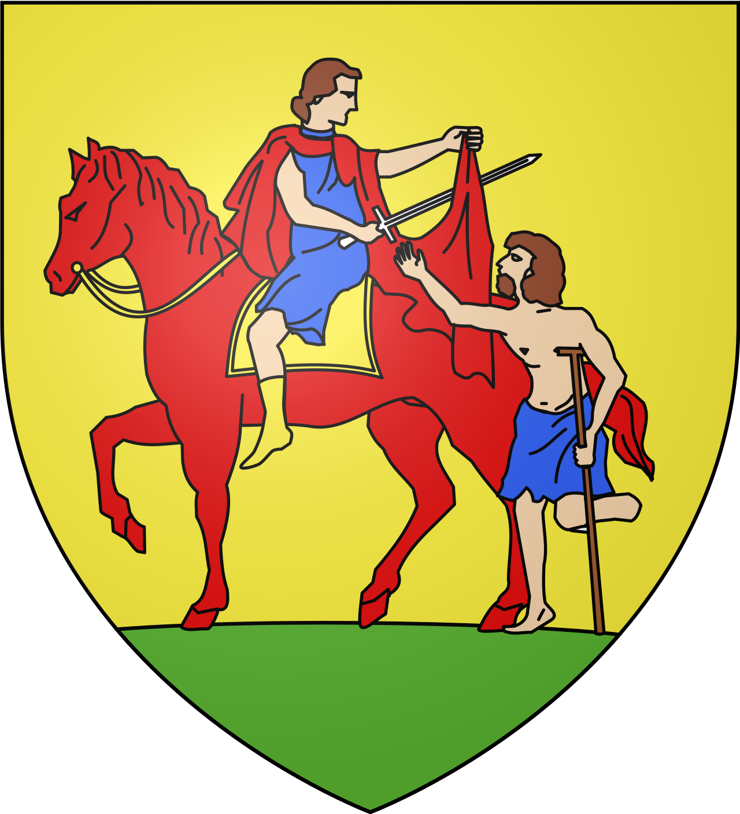

Aigues-MortesLa cité fortifiée de Saint Louis


⟹ Croisades · Remparts · Marais salants ⟸

Une fondation royale sur un terrain marécageux. Au XIII e siècle, le roi Louis IX, futur Saint Louis, cherche un port royal en Méditerranée alors que le littoral languedocien appartient majoritairement à des seigneurs ou à l'Église. Il fait édifier à partir de 1240 environ une ville nouvelle sur un site marécageux proche de la mer, d'où son nom d'Aigues-Mortes, les « eaux mortes ».
Le départ des croisades de 1248 et 1270. Aigues-Mortes devient le port d'embarquement des deux croisades menées par Saint Louis, en 1248 pour la septième croisade vers l'Égypte, puis en 1270 pour la huitième croisade vers Tunis, où le roi trouve la mort. Ces départs prestigieux ancrent durablement la cité dans la mémoire royale française.

Des remparts exceptionnellement conservés. Les fortifications actuelles, principalement édifiées sous Philippe III le Hardi et Philippe IV le Bel à la fin du XIII e siècle, dessinent un plan régulier rectangulaire parfaitement conservé, unique en France pour une ville de cette ampleur, avec la Tour de Constance comme point d'orgue défensif.
La Tour de Constance, prison des huguenots. Après les guerres de Religion, la Tour de Constance sert de prison pour protestants, notamment pour des femmes condamnées pour avoir pratiqué leur culte. Marie Durand, emprisonnée trente-huit ans, y aurait gravé sur la margelle d'un puits le mot « Résister », devenu symbole de la résistance huguenote.
L'ensablement du port et la reconversion salinière. Le port, victime dès le Moyen Âge de l'ensablement progressif du littoral, perd rapidement sa fonction maritime au profit d'Aigues-Mortes, la ville se repliant alors sur l'exploitation des marais salants environnants, activité qui perdure aujourd'hui sous forme industrielle avec les Salins du Midi.

Aujourd'hui, Aigues-Mortes conserve une identité marquée par ce passé : cité fortifiée médiévale, port de croisade, la commune s'inscrit pleinement dans la zone Camargue gardoise, entre mémoire patrimoniale et vie locale contemporaine. Cette continuité, entre héritage et vie quotidienne, fait aujourd'hui tout l'intérêt d'une visite attentive à l'histoire du lieu.
Saint Louis, à l'origine de la fondation de la ville, reste la figure historique la plus associée à Aigues-Mortes. Marie Durand, protestante emprisonnée trente-huit ans à la Tour de Constance pour sa foi, incarne quant à elle la mémoire huguenote de la cité.
La fête votive d'Aigues-Mortes, avec ses courses camarguaises et ses abrivados, perpétue chaque année les traditions tauromachiques et festives de la Petite Camargue.
Aigues-Mortes est restée fidèle à son plan médiéval : une cité fortifiée intacte, née des rêves de croisade de Saint Louis, aujourd'hui cernée par les marais salants et les étangs de Camargue.
Repère synthétique — L'Âme des RégionsSaint-Gilles village voisin de la zone Camargue gardoise, l'abbatiale des chemins de compostelle.
Vauvert village voisin de la zone Camargue gardoise, la légende du diable de vauvert.
Parc naturel régional de Camargue les grands espaces sauvages, étangs et manades qui prolongent la Camargue gardoise vers les Bouches-du-Rhône.